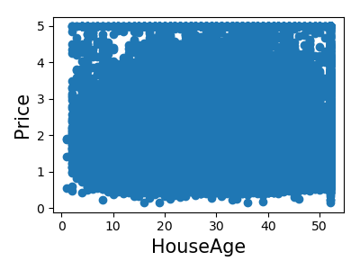
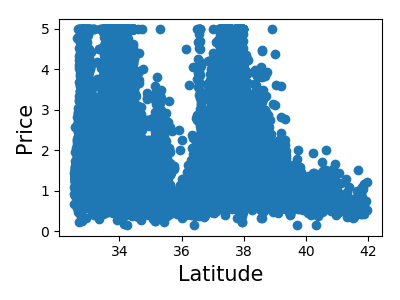
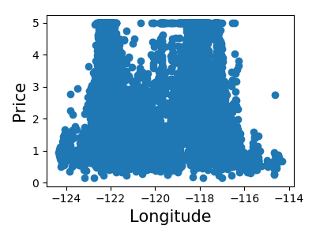

Note
Click here to download the full example code
3.6.10.11. A simple regression analysis on the California housing data¶
Here we perform a simple regression analysis on the California housing data, exploring two types of regressors.
from sklearn.datasets import fetch_california_housing
data = fetch_california_housing(as_frame=True)
Print a histogram of the quantity to predict: price
import matplotlib.pyplot as plt
plt.figure(figsize=(4, 3))
plt.hist(data.target)
plt.xlabel('price ($1000s)')
plt.ylabel('count')
plt.tight_layout()

Print the join histogram for each feature
for index, feature_name in enumerate(data.feature_names):
plt.figure(figsize=(4, 3))
plt.scatter(data.data[feature_name], data.target)
plt.ylabel('Price', size=15)
plt.xlabel(feature_name, size=15)
plt.tight_layout()

- 


- 
- 
Simple prediction
from sklearn.model_selection import train_test_split
X_train, X_test, y_train, y_test = train_test_split(data.data, data.target)
from sklearn.linear_model import LinearRegression
clf = LinearRegression()
clf.fit(X_train, y_train)
predicted = clf.predict(X_test)
expected = y_test
plt.figure(figsize=(4, 3))
plt.scatter(expected, predicted)
plt.plot([0, 50], [0, 50], '--k')
plt.axis('tight')
plt.xlabel('True price ($1000s)')
plt.ylabel('Predicted price ($1000s)')
plt.tight_layout()

Prediction with gradient boosted tree
from sklearn.ensemble import GradientBoostingRegressor
clf = GradientBoostingRegressor()
clf.fit(X_train, y_train)
predicted = clf.predict(X_test)
expected = y_test
plt.figure(figsize=(4, 3))
plt.scatter(expected, predicted)
plt.plot([0, 50], [0, 50], '--k')
plt.axis('tight')
plt.xlabel('True price ($1000s)')
plt.ylabel('Predicted price ($1000s)')
plt.tight_layout()

Print the error rate
Out:
RMS: 0.5314909993118918
Total running time of the script: ( 0 minutes 4.479 seconds)